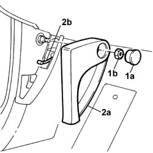

7025A24 Bonnet release LEVER - R.R.
- Path
- Procedures > 70 FITTINGS > 7025 COMPARTMENT LIDS > 7025A BONNET LID > 7025A24 Bonnet release LEVER - R.R.
- Kind
- repair procedure (removal / refitting; the operation number is the code)
- Applies to
- all engines; all production periods
- Interactive page
- https://sloeber94.github.io/elrnDB-lThss/en/#/80210
Applies to: all engines; all production periods
 Removing
Removing
 Refitting
Refitting- Disconnect the negative battery terminal.
See in Op. 7025A34 bonnet lid lock (one) - r+r or repair
1. Release the protective cap (1a) and undo the nut (1b) underneath.
2. Remove the bonnet opening lever (2a), releasing the cable (2b).

Applies to: all engines; all production periods
Refitting
Removing- Check that the bonnet release cable is not damaged.
- Connect the bonnet release cable to the lever and secure it to the retaining springs.
- Position the lever in the housing and tighten it using the nut.
- Fit the protective cap.
See in Op. 7025A34 bonnet lid lock (one) - r+r or repair
- Connect the negative battery terminal.
Topics linked from this page (1)
Topics that link to this page (9)
- 1040A74 INERTIA SWITCH for cutting off electric fuel pump circuit - R.R.
- 1040A74 INERTIA SWITCH for cutting off electric fuel pump circuit - R.R.
- 1040A74 INERTIA SWITCH for cutting off electric fuel pump circuit - R.R.
- 5505C26 ENGINE COMPARTMENT built in wiring - R.R.
- 5505C41 PASSENGER COMPARTMENT built in WIRING - R.R.
- 7005A30 Left front side door housing seal - R.R.
- 7025A28 bonnet lid RELEASE - R.R.
- 7040L17 Passenger compartment front floor carpet - R.R.
- 7040L39 RUNNING BOARD FOR LEFT FRONT DOOR HOUSING - R.R.